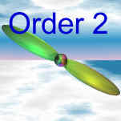
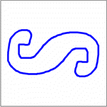
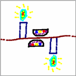
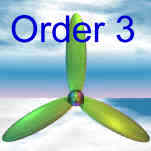
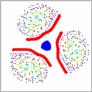
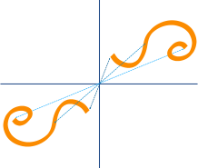

Symmetry
Reflection Symmetry
The simplest symmetry is Reflection Symmetry (sometimes called Line Symmetry or Mirror Symmetry). It is easy to see, because one half is the reflection of the other half.
 |
Here my dog "Flame" has her face The white line down the center is the |

The reflection in this lake also has symmetry, but in this case:
- the Line of Symmetry runs left-to-right
- it is not perfect symmetry, as the image is changed a little by the lake surface.
The Line of Symmetry can be in any direction (not just up-down or left-right). To learn more, go to Reflection Symmetry.
Rotational Symmetry
With Rotational Symmetry, the image is rotated (around a central point) so that it appears 2 or more times. How many times it appears is called the Order.
Here are some examples (they were made using Symmetry Artist, and you can try it yourself!)
| Order | Example Shape | Artwork |
|---|---|---|
|  |  |  |
|  |  | |
| ... and there is Order 4, 5, etc ... | ||
Point Symmetry

Point Symmetry is when every part has a matching part:
- the same distance from the central point
- but in the opposite direction.
It is also the same as "Rotational Symmetry of Order 2" above